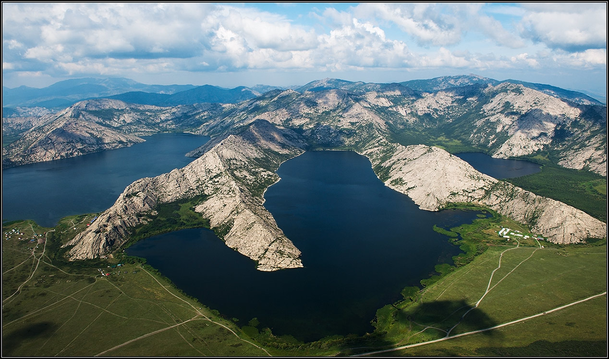
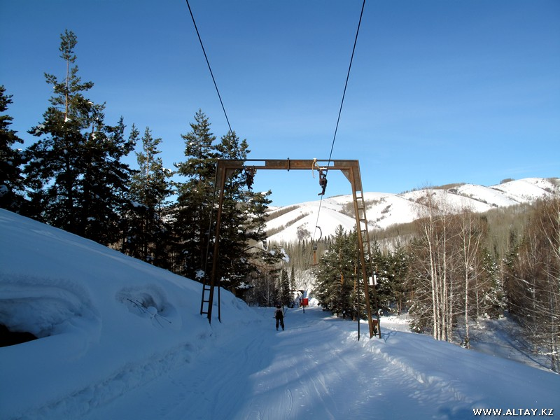
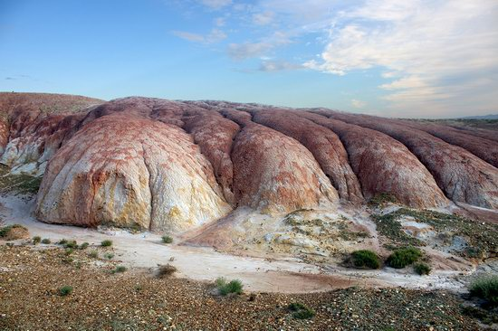
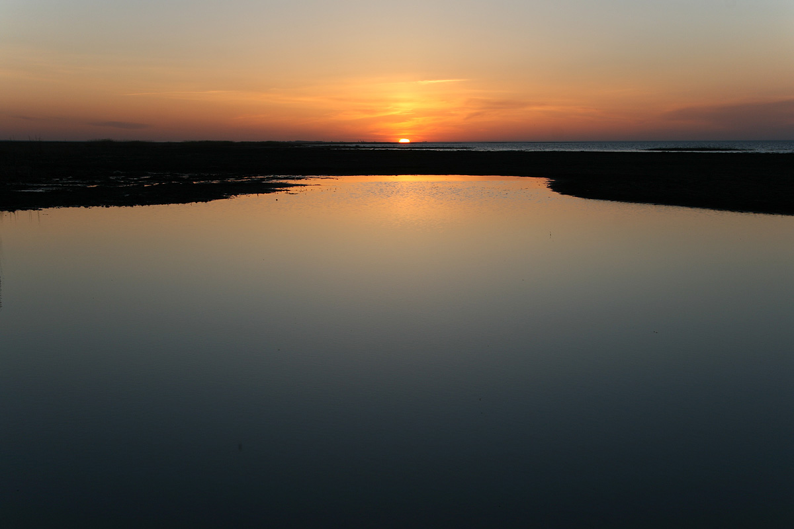

The Sibin Lakes are a group of five lakes (Sadyrkol, Tortkara, Shalkar, Korjinkol, and Karakol) located in East Kazakhstan Province. Their total area is 32 square kilometers (20 sq. mi), while their depth varies from 2.5 to 38 meters (6.5-125 ft). Framed by granite mountain peaks, the lakes are a popular destination among beach-goers and hikers. People come here to admire panoramic views from the rocky peaks of the Baiga, Medvedka, and Koktau Mountains, marvel at ancient rock paintings, and try their luck at finding rare minerals such as almandine and black tourmaline. Near the lakes, you can find the ruins of a Buddhist monastery, something you don’t expect to see in Kazakhstan. According to some legends, a golden statue of Buddha is submerged at the bottom of one of the lakes. This legend attracts divers who dream of discovering it. The lakes also draw fishermen from all over the region, allured by the chance to catch pike, carp, and roach. In winter the lakes become a nice spot for ice fishing. All along the lake shores are recreation areas offering an extreme park, a climbing wall, a bungee jumping spot, and grounds for volleyball, tennis, and soccer.
Majestic slopes made the recreation center Altay Alps one of the best ski resorts in Kazakhstan. Since then, as the first snowflakes touch the land of the Altay, the resort base revives and re-opens its doors to lovers of active pastime. Each camper can find something to enjoy, regardless of the season. Alpine cafe - after an active holiday on our slopes and getting lots of positive emotions, you can spend a pleasant time and have a dinner in our cafe. The best and the most delicious dishes at affordable prices are offered for you. We hold banquets, anniversaries, gala evenings, corporate events - you can choose a menu and program to your taste. Every holiday, whether it's New Year or "Student Day" we celebrate in a special way - presenting an entertainment program with lots of competitions and prizes.
Kiin Kirish, an amazingly picturesque clay canyon, is a unique natural monument located 120 km southeast of the town of Kurshim in the East Kazakhstan region and covers an area of 300 hectares. This place is also known as “The Town of Spirits”. Multicolored clays, eroded by water and wind, form vivid, bizarre landscapes here. The optimal time for a trip is 3-4 days.
Lake Zaysan is undoubtedly one of the oldest bodies of water on the planet. Its exact age is so difficult to determine. According to some indirect signs, scientists suggest that the reservoir was formed at the end of the Cretaceous period, more than 65 million years ago, and therefore dinosaurs graced its waters. If this hypothesis is correct, then the Zaysan may be even older than Lake Baikal, whose age, according to the common opinion, is about 25 million years.
You can find other places around Oskemen here: Nature around Oskemen